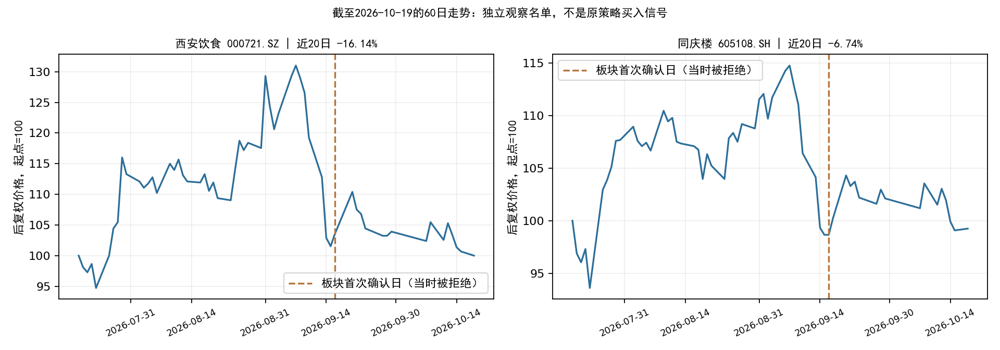

可以列入观察名单的两只：西安饮食（000721）、同庆楼（605108）。原策略正式新入场候选仍为0。
本次按用户要求，对板块中的个股单独筛选。没有修改数据工程程序、策略参数或重训模型。板块模型拒绝、旧事件重复确认后的个股排序效果尚未验证，不能据此宣称原策略出现新的买点。
| 名称 | 代码 | 19日收盘价 | 当日涨跌 | 近20日涨跌 | 20日日收益波动率 | 减速比 | 排序分数 |
|---|---|---|---|---|---|---|---|
| 西安饮食 | 000721.SZ | 5.87 | -0.68% | -16.14% | 3.01% | 0.538648 | 0.003943 |
| 同庆楼 | 605108.SH | 11.77 | 0.17% | -6.74% | 1.88% | 0.415168 | 0.001857 |
以上价格、收益与模型分数来自10月19日冻结行情快照及本地重算。排序分数仅用于板块内相对排序，不是胜率，也不是可兑现的预期收益。
两只的既有趋势标记均为False。2026个股方案不将趋势单独作为硬门槛，因此未据此删除；也不能把通过价格形态说成趋势反转已获确认。减速比使用平均负日收益，不是将两段累计收益直接相除。

以上财务数据仅作独立判断的补充，未临时混入模型或改变原有筛选规则。本次没有穷尽公司所有公告，不能等同于完整的事件风险审查。
| 名称 | 代码 | 19日收盘价 | 个股价格形态 | 排序分数 | 未入选原因/状态 |
|---|---|---|---|---|---|
| 华天酒店 | 000428.SZ | 3.51 | False | 0.002165 | 下跌减速未过；当日跌幅超过2% |
| 西安饮食 | 000721.SZ | 5.87 | True | 0.003943 | 个股条件通过；板块/首次事件入口不通过 |
| 全聚德 | 002186.SZ | 9.09 | True | -0.001117 | 个股排序分数非正 |
| ST云网 | 002306.SZ | 1.86 | False | 未评分 | ST资格排除 |
| 君亭酒店 | 301073.SZ | 16.28 | True | -0.000792 | 个股排序分数非正 |
| 首旅酒店 | 600258.SH | 11.26 | False | 0.007716 | 前3日跌幅不足1%；下跌减速未过 |
| 锦江酒店 | 600754.SH | 17.95 | True | -0.007464 | 个股排序分数非正 |
| 金陵饭店 | 601007.SH | 6.58 | True | -0.006307 | 个股排序分数非正 |
| 同庆楼 | 605108.SH | 11.77 | True | 0.001857 | 个股条件通过；板块/首次事件入口不通过 |
9只成员中，ST云网被资格筛选排除，8只进行截面排序，6只通过价格形态，最终2只在形态池内分数为正。所有截面特征先在合格成员中计算，再取价格形态池；没有先挑选这两只后重新排名。
首旅酒店虽分数为正，但前3日累计上涨0.99%，并未满足先跌至少1%的结构，减速比也未通过；华天酒店还受到19日跌幅2.50%超过2%限制的排除。全聚德、君亭酒店、锦江酒店、金陵饭店虽然价格形态通过，但排序分数非正。
原规则按市场事件的首次确认日开放一个交易日的入场窗口，与账户是否已经持有无关。酒店餐饮本轮首次确认在9月17日，年度板块分数-0.009877，低于0.003289阈值；当时就不是通过模型的买点。
19日的形态重现不会自动产生新的原策略入场窗口。本次两只名单来自人为单独审视板块成员，模型适用场景已经超出“板块首次确认且模型通过”的训练/研究条件。若坚持执行原策略，当前继续等待；如果仅建立自选观察名单，两只都可以跟踪，尚不足以给出直接买入的结论。
datahub/releases/selection_live_20261019_eod，截至19日收盘；价格为未复权收盘，收益和波动按后复权价格计算。stock_at_date、stock_shape、cross_section_features、select_positive_top；研究产物单独保存，不写入正式机会扫描的买入候选。